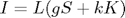

Dichromatic parameter recovery
Contents
Syntax
[k, g, K, S] = recover_dichromatic_parameters(I, L)
[k, g, K, S] = recover_dichromatic_parameters(I, L, options)Description:
This function recovers the photometric parameters in the context of the dichromatic reflection model whereby

where, the illuminant power spectrum is given on L, g is the shading factor, S is the surface reflectance, k is the specular coefficient and K is the specular highlight.
Input:
I: the radiance image (stored as a 3D array with size height x width x bands).
L: the illuminant power spectrum, stored as a 1D vector of size (bands x 1). If L is not given,
it will be estimated in this function by calling recover_illuminant function
options: Structure with the following fields
method: String specifying the method to be used. This can be
'LS' for the linear least squares solver,
'KL' for the energy minimization method, or
'TI' for the method of Tan and Ikeuchi neigbourhoodsize (optional, used by the LS option):
a threshold used to ignore the processing of regions with a small number of pixels. Those
with a number of pixels smaller than or equal to this are considered diffuse. (default value is 5) ignoreThresh = 5;
grayThresh: (optional, used by the LS option): a threshold used to determine whether a material is a shade of gray. If
the reflectance spectra within a cluster does not deviate from a uniform spectrum (a flat
line) beyond this threshold, then we will assume that it is a shade of gray and purely
diffuse. (default value is 2) grayThresh = 2;
numclusters: (option, used by the KL option): the number of clusters used for the K-means, the
default is 20.
DEBUG: Defines the level of displaying debugging information. Default is 1, the least
information will be givenOutput:
K: The wavelength dependant specularity per pixel, stored as a 3D array of size height x
width x bands.
S: The normalised reflectance cube per pixel and wavelength, stored as a 3D array of size height
x width x bands. The reflectance spectrum at each pixel is normalised to a unit L2-norm. That
is the vector S(i, j, :) is normalised.
k: The specular coefficient per pixel. k is stored as a 2D array with a size of height X width.
g: The shading factor per pixel. g is stored as a 2D array with a size of height X width.